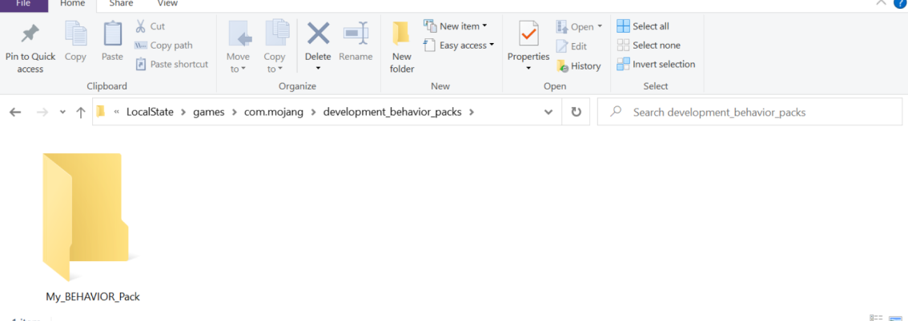
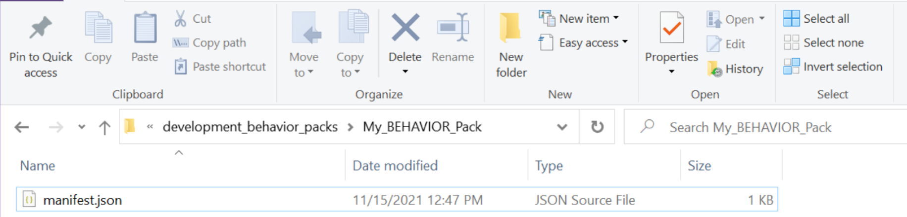
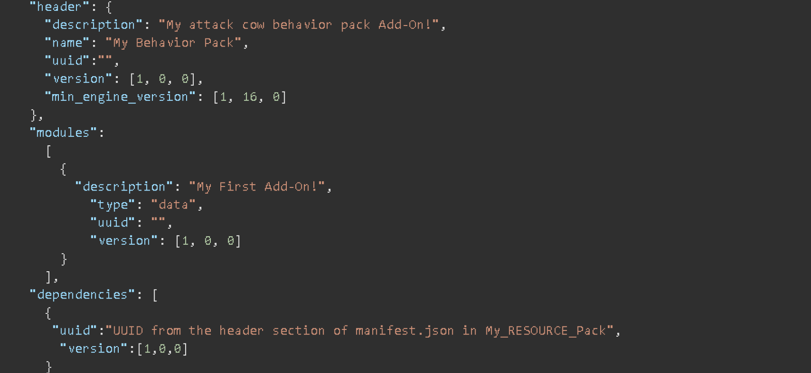
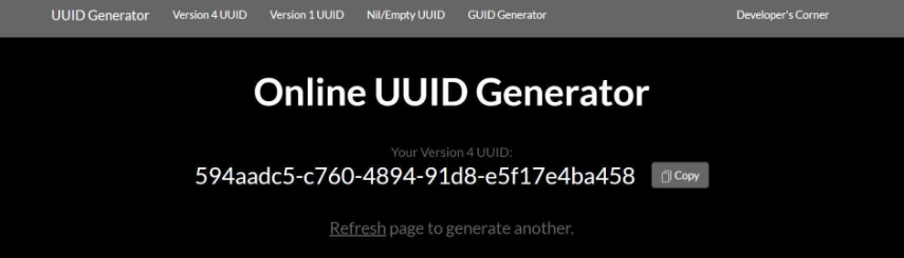
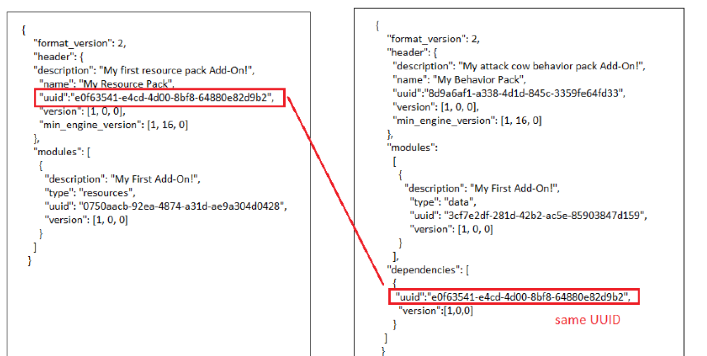
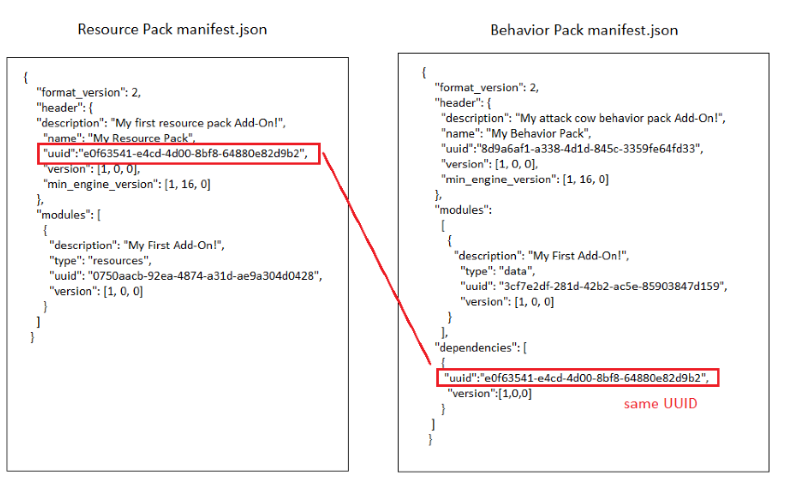

El archivo de manifiesto contiene toda la información básica sobre el paquete que Minecraft necesita para identificarlo. Las siguientes tablas contienen todos los componentes del manifiesto, sus propiedades individuales y lo que significan.
Crea una carpeta En esta sección, crearás una carpeta llamada My_BEHAVIOR_Pack. Bueno, en verdad no tienes que llamarla así. De hecho, puedes darle el nombre que quieras, pero las otras deben tener exactamente el mismo nombre que figura en este tutorial para que Minecraft sepa dónde buscarlas. Abre la carpeta com.mojang. Abre la carpeta development_behavior_packs. Dentro de la carpeta development_behavior_packs, crea una carpeta nueva y llámala My_BEHAVIOR_Pack. Abre la carpeta My_BEHAVIOR_Pack 
Crea el archivo de manifiesto Para cargar un pack de comportamiento en Minecraft, tendrás que crear un archivo de manifiesto. El archivo de manifiesto del pack de comportamiento es similar al creado para el pack de recursos, pero tiene dos secciones adicionales. modules: define el pack para que Minecraft sepa cómo aplicarlo en el mundo. Los packs de comportamiento usan el tipo data. dependencies: crea un vínculo entre los packs de comportamiento y los packs de recursos para agregar texturas y elementos visuales personalizados en Minecraft. Crea un documento nuevo en tu carpeta My_BEHAVIOR_Pack y llámalo manifest.json. Deberás cambiar la extensión del archivo de .txt a .json. Si en la ventana del Explorador no se muestran las extensiones de nombre de archivo, puedes habilitarlas en la pestaña Ver. 
Introduce UUID Al igual que en el archivo de manifiesto del pack de recursos, tendrás que generar dos UUID diferentes para las secciones del encabezado y del módulo de tu archivo de manifiesto. Puedes usar un generador de UUID online como https://www.uuidgenerator.net Copia y pega un UUID en la sección de encabezado. Deberás pegar el UUID en el campo "uuid" entre las comillas ("") para que se lea correctamente. Actualiza la página web para generar un UUID nuevo que podrás usar en la sección de módulos. Copia y pega el UUID nuevo en la sección de módulos, en el campo "uuid" entre las comillas. 
Crea la dependencia Hay una tercera sección en el archivo manifest.json del pack de comportamiento llamada "dependencias" que se usa para crear un vínculo entre un pack de recursos y un pack de comportamiento. Este vínculo se crea cuando el UUID ubicado en la sección de encabezado del archivo manifest.json del pack de recursos es el mismo que el UUID en la sección de dependencias del archivo manifest.json del pack de comportamiento. No necesitas tener un pack de recursos para usar un pack de comportamiento y viceversa. Si cuentas con ambos, puedes usar esta solución para vincularlos. De este modo, cuando cargues un pack de comportamiento en un mundo, automáticamente se cargará y activará el pack de recursos vinculado con él. 
Abre el archivo manifest.json ubicado en la carpeta My_RESOURCE_Pack dentro de la carpeta development_resource_packs. Copia el UUID de la sección de header del archivo manifest.json del pack de recursos. Ve al archivo manifest.json ubicado en la carpeta *My_BEHAVIOR_Pack dentro de la carpeta development_behavior_packs. Pega el UUID en el campo "uuid" en la sección de dependencias. Asegúrate de que todo el texto entre comillas coincida exactamente. Guarda el archivo manifest.json del pack de comportamiento. 